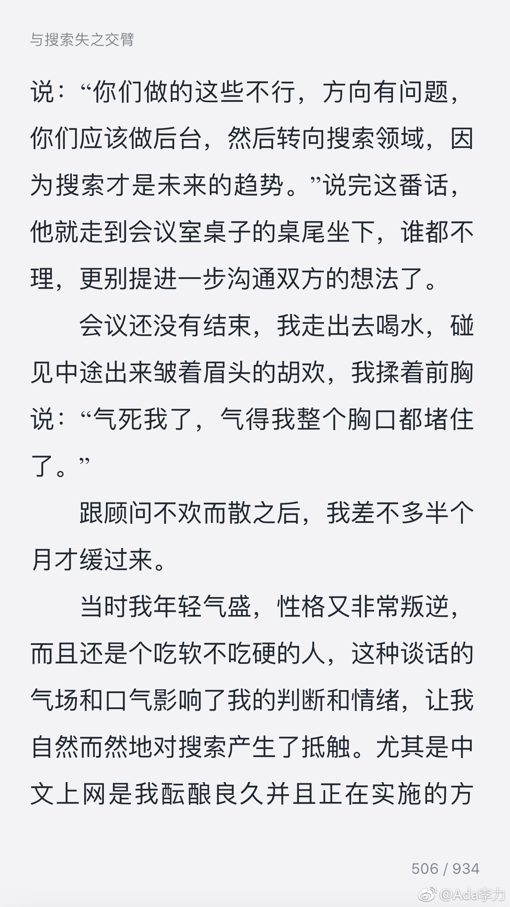

#创业# 周鸿祎在自传《颠覆者》里很坦诚，一直在反思自己曾犯过的错误，比如不够专注，固执到吃软不吃硬的程度…
我觉得这些问题挺常见，不常见的是自己能意识到并修正。这本书对创业过程中各种心态描述，还真是贴切。
提出正确方向的顾问让他对搜索更排斥，倒是让我想到了自己以前有那顾问的类似毛病，觉得自己看准了，也提出了建议，就不太考虑说话的语气。实际上，正确的建议，如果没人听你的，那也是P用没有。既然说出来，就要把这个建议变成现实，第一步：就是能让对方听进去，所以，看人下碟的沟通方式很重要。
我觉得这些问题挺常见，不常见的是自己能意识到并修正。这本书对创业过程中各种心态描述，还真是贴切。
提出正确方向的顾问让他对搜索更排斥，倒是让我想到了自己以前有那顾问的类似毛病，觉得自己看准了，也提出了建议，就不太考虑说话的语气。实际上，正确的建议，如果没人听你的，那也是P用没有。既然说出来，就要把这个建议变成现实，第一步：就是能让对方听进去，所以，看人下碟的沟通方式很重要。
- 